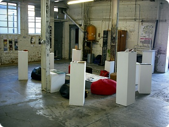
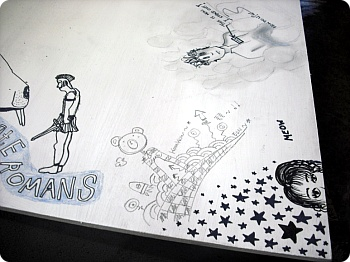
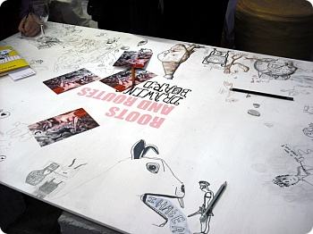
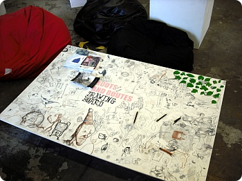
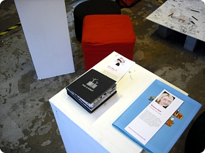

전시회 무사히 마쳤습니다^^***
28일 Private View때 의외로 사람이 많아서 깜놀+_+
(역시 공짜술의 위력인가 ㅋㅋㅋㅋ)
양심상(....) 저날 안경대신 렌즈끼고 화장도 촘 하고
안신던 구두를 신고 런던에 나갔더니
내발!!내발!!아이고내바알~~!!!! ;ㅂ;
도대체 발이 이상하게 생겨먹은건지 걸음걸이가 이상한건지
구두만 신었다하믄 발등껍질이 다 까지는......OTL
28일 Private View때 의외로 사람이 많아서 깜놀+_+
(역시 공짜술의 위력인가 ㅋㅋㅋㅋ)
양심상(....) 저날 안경대신 렌즈끼고 화장도 촘 하고
안신던 구두를 신고 런던에 나갔더니
내발!!내발!!아이고내바알~~!!!! ;ㅂ;
도대체 발이 이상하게 생겨먹은건지 걸음걸이가 이상한건지
구두만 신었다하믄 발등껍질이 다 까지는......OTL
1.기대를 저버리지 않고;;
이번에도 갤러리 코앞에서 신나게 헤맸음;;
뱅글뱅글돌고있으니까 반애들이 마구 웃으믄서 나 주웠다능;;
도대체 어디가냐믄서 질질질 끌고와줬어욤 감사;;;;;
2.항상 같이다니는 M언니가 나고야출신이라
사투리가 진짜 센데
나도모르게 나도 나고야사투리를 쓰고있다 ㅜㅜ
무의식중에 마후라 대신 이 언니가 항상 쓰는
くびまき라고 말해버렸음;;;;
언니 뒤로 넘어가게 웃고
자기때문이라믄서 미안하다고^^;;;
한국사람이 나고야사투리로 일본어를 하는거
이상하잖아!!!!!ㅜ_ㅜ
3.Private View라 다들 자기가족 친구등등 초대해서
같이 전시회 보고 그랬는데
그림칭구 C군이 자기형 / 여동생 / 여동생의 친구
까지데꾸 갤러리 찾아와줬다
아이쿳 감샤 ㅜㅜ

30일은 갤러리 지킴이^^
목요일은 사람이 넘 많아서 사진 제대로 못찍고
아침에 갤러리 문 열자마자 잽싸게 찍었음
목요일은 사람이 넘 많아서 사진 제대로 못찍고
아침에 갤러리 문 열자마자 잽싸게 찍었음

중앙테이블 낙서판
콤콤을 그리쟈~콤콤을그리쟈~^^***
콤콤을 그리쟈~콤콤을그리쟈~^^***

이건 첫날에 저녁에 찍은것

그리고 30일날 다시 가보니 이미 보드는 바글바글

저의 첫번쨰 책입니다+_+ 훗훗훗
이제 기숙사 이사랑 여행을 떠날시기가 점점 다가오는군욤
짐싸기 귀찮.......ㅜㅜ
이제 기숙사 이사랑 여행을 떠날시기가 점점 다가오는군욤
짐싸기 귀찮.......ㅜㅜ